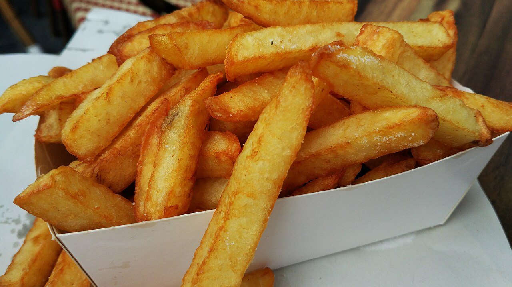
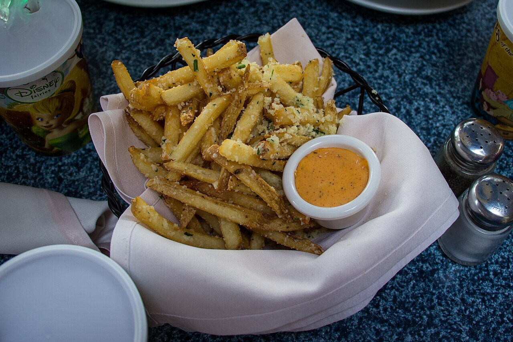
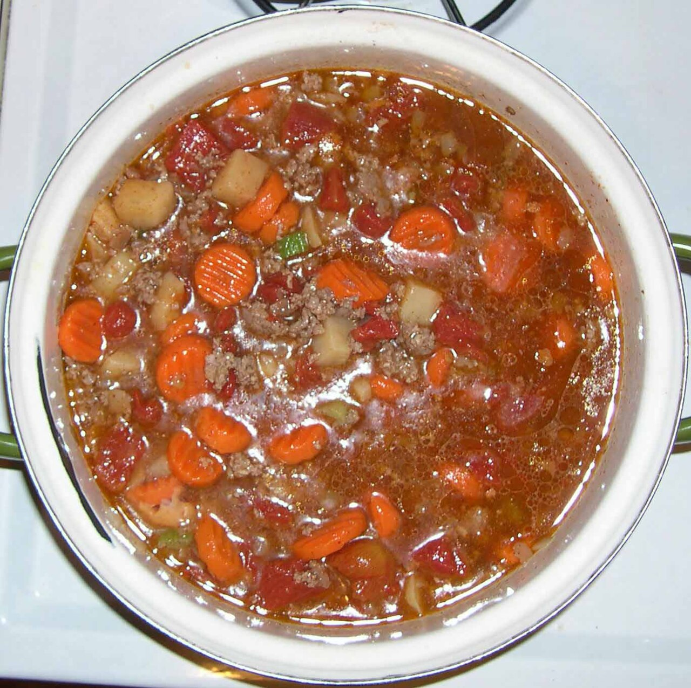
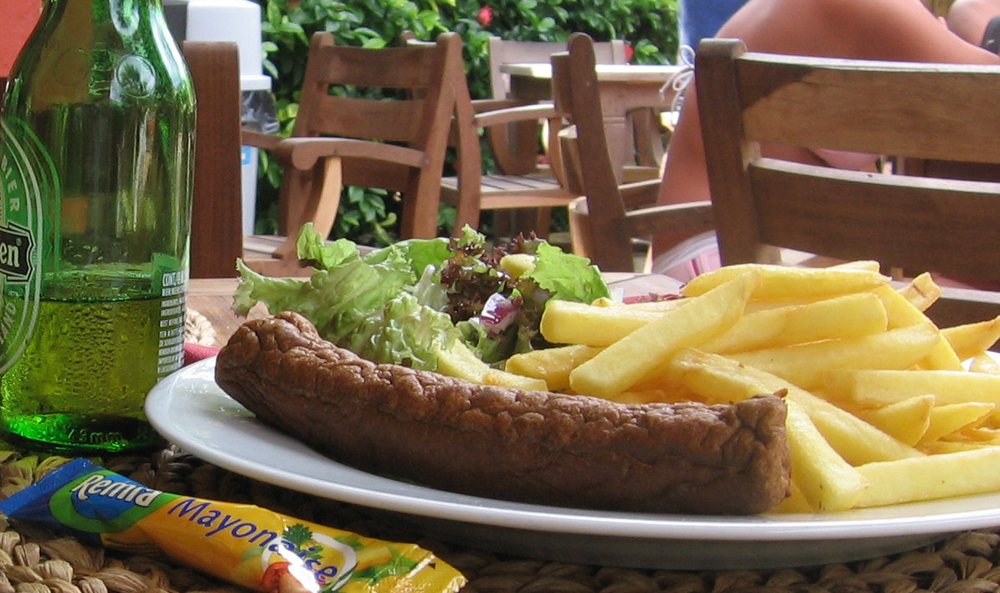
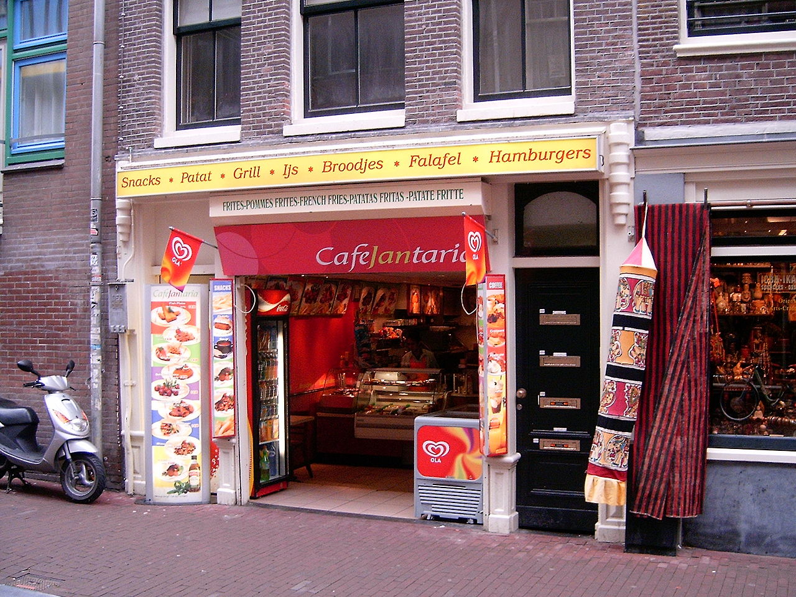

De klassieke friet
Twee keer gebakken in ossewit voor een krokant korstje en zacht hart. Zoals friet hoort te zijn.
Bij Frituur Het Haspengoud in Heks bakken we elke dag verse frieten in échte ossewit, met huisgemaakte snacks en een boordevolle sauzenkaart. Proef het verschil.

Van de perfecte puntzak tot onze legendarische stoofvleessaus — dit haalt iedereen keer op keer terug.

Twee keer gebakken in ossewit voor een krokant korstje en zacht hart. Zoals friet hoort te zijn.

Uren gesudderd op ons eigen recept met bruin bier. Rijkelijk over je frietje of apart.

Frikandel speciaal, bicky burger, kaaskroket, mexicano… de hele klassieke frituurkaart.

Frituur Het Haspengoud is meer dan een frituur — het is een vaste stop voor jong en oud in Heks en omstreken. We werken met verse streekaardappelen, bakken alles op het moment zelf en kennen onze klanten bij naam.
Zin in friet? Kom langs of bel vooraf — dan staat je bestelling warm klaar.
Wij zetten je frietjes en snacks vers klaar voor afhaling. Geen wachtrij, gewoon lekker.
"De beste friet van de streek. Krokant, vers en die stoofvleessaus… wij komen nergens anders meer."
"Altijd vriendelijk, altijd vers en je staat nooit lang aan te schuiven. Een échte dorpsfrituur!"
"Ruime keuze snacks en de kindermenu's zijn top. Onze wekelijkse vrijdagavond-traditie."
Kom langs in Heks of bel je bestelling door. Wij zorgen voor de lekkerste frieten van Haspengouw.